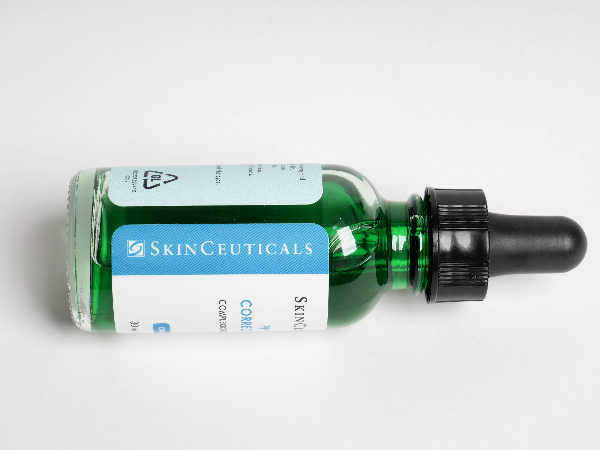
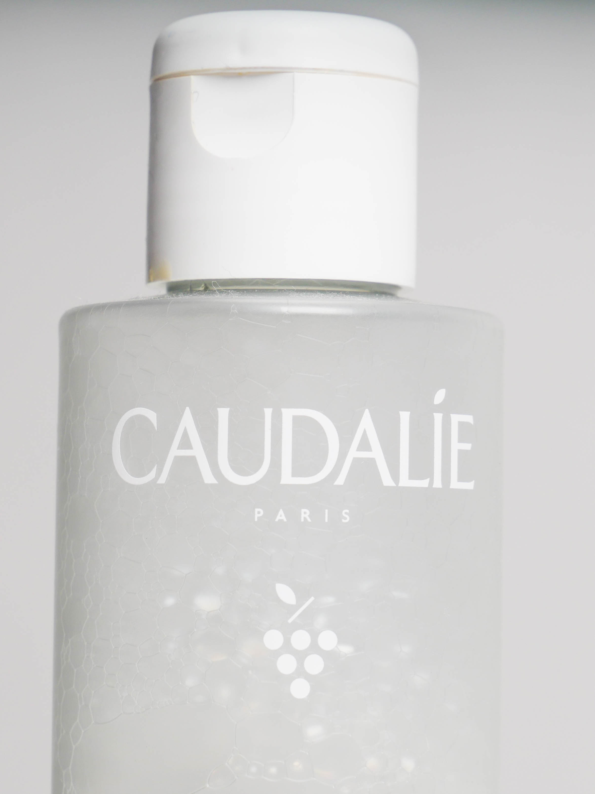
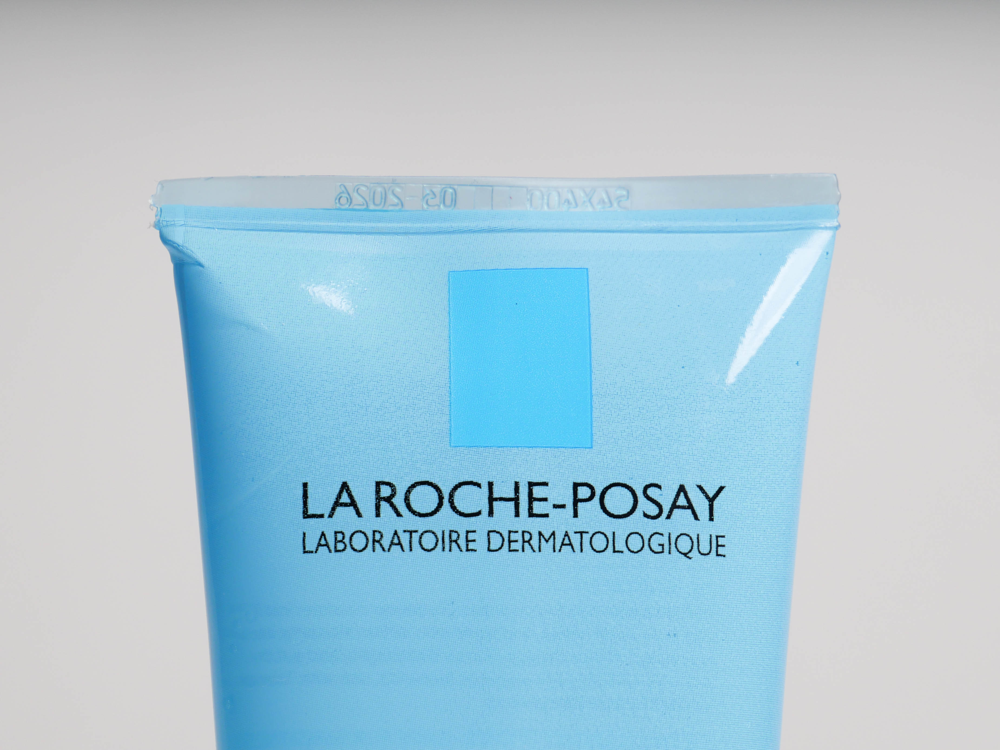

Learn more about the brands we trust and why!
Skin Ceuticals
Skin Ceuticals deserves all the hype it gets! All products are backed by science and its mission is to improve skin health.
I have used many Skin Ceuticals products and they never disappoint. They are fast acting, and although many are pricy, if you
are looking for products that actually work, this is your brand.
Caudalie
This French skincare brand combines natural ingredients with a scientific background creating rich products that do more than
benefit your skin. I love this brand because it prioritizes natural, active ingredients that are good for your skin and don't harm
the environment.
La Roche-Posay
La Roche-Posay is a Dermatologist French Skincare brand which offers a wide variety of skincare needs. It is my favorite drugstore brand
because I haven't found a product I didn't like. Their products are very consistent and you can be certain it is made with the best ingredients.